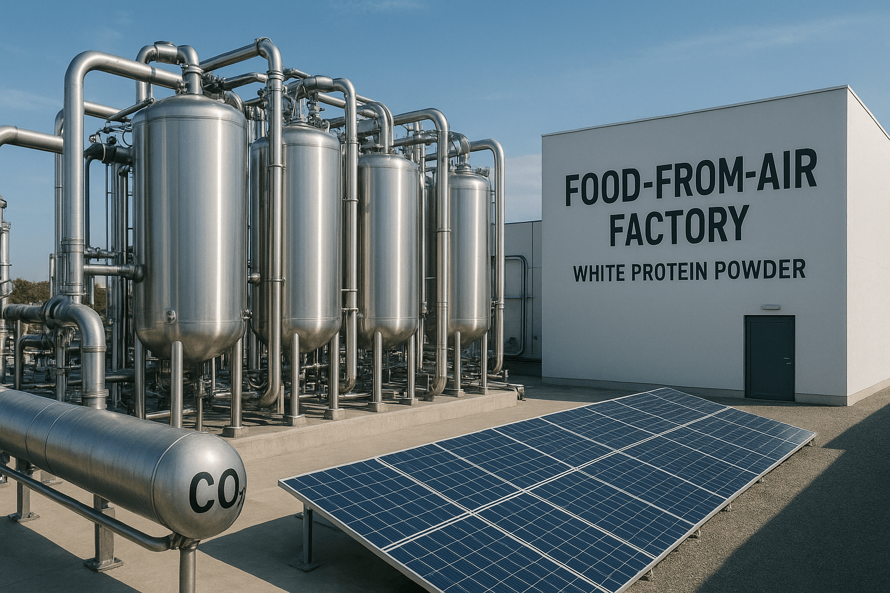

Food from Air: How Microorganisms Learned to “Cook” from Nothing
The probe captures an astonishing signal rising from industrial bioreactors: dinner literally pulled from thin air. What happens when protein no longer requires farms, fields, or animals—when CO₂ and hydrogen transform into meat in mere hours?

Scanning deeper: microbial fermentation is turning the gas we exhale into complete, nutritious protein—already on shelves and poised to reshape global food systems.
Why It Matters
Traditional meat production accounts for 14.5% of global greenhouse gases—more than all transportation combined. Producing 1 kg of beef demands:
- 15,000 liters of water
- 25 kg of feed
- 13 kg of CO₂
- 2 years of growth
Air Protein achieves the same in 10 hours—using atmospheric CO₂ as the primary ingredient.
“We take what pollutes the planet — and turn it into food.” — Lisa Dyson, CEO, Air Protein
How It Works — The Microbial Kitchen
The core technology relies on hydrogenotrophic microbes—bacteria that metabolize gases rather than sugars.
- Feedstock: CO₂ (captured from air or industrial exhaust) + H₂ (produced via renewable electrolysis);
- Bioreactor: 10,000L stainless steel tanks maintained at 37°C, pH 6.8;
- Microbes: Engineered Cupriavidus necator—the same species NASA explored in the 1960s;
- Output: Biomass containing 80% protein by dry weight, complete with all 9 essential amino acids.
The harvest: Air Protein Flour—a neutral powder chemically indistinguishable from animal protein.
“It’s not ‘plant-based.’ It’s air-based. A bioreactor instead of a cow. Air instead of grain.”
Tastes Like Meat — Without the Meat
Air Protein products already available:
- Air Chicken — shredded, neutral flavor, 25g protein/100g;
- Air Beef Crumbles — used in Impossible-style tacos;
- Air Yogurt — live cultures, creamy texture, zero lactose.
Blind taste tests (2024):
| Product | Preferred Over Real Meat |
|---|---|
| Air Chicken Nuggets | 68% |
| Air Beef Burger | 61% |
Texture: juicy, fibrous — achieved through extrusion at 140°C under 30 bar pressure.
Why It Could Change the World
- Carbon negative: 1 kg Air Protein sequesters 5 kg CO₂;
- 99% less water than beef;
- Zero arable land — viable in deserts, rooftops, or extraterrestrial habitats;
- Scalable: One factory supplies protein for 1 million people annually.
NASA’s 2025 Mars mission includes a 1m³ Air Protein reactor—capable of indefinitely feeding a four-person crew.

But What If It’s Unnatural?
Critics label it “Frankenfood.”
Researchers respond:
- Identical amino acid profile to beef;
- No hormones, antibiotics, or cholesterol;
- Fermentation predates agriculture—used for beer, yogurt, and cheese for millennia.
“Once, people thought bread was a miracle. Now, dinner made from air will be the new miracle.”
What’s Next
- 2026: Air Farms — 100,000L vertical bioreactors in Singapore;
- 2028: Home Air Protein pods — countertop unit, $299, produces 1kg/week;
- 2030: UN Air Protein Program — feeding 50 million in climate-stressed regions.
By 2040, 20% of global protein could originate from air.
“This isn’t just innovation — it’s a second chance for the planet.” — Kiverdi (Air Protein’s parent company)
Key signal: food production is decoupling from land and livestock—microbes are cooking from the atmosphere itself.
The probe disengages from the bioreactor glow and fades into shadow: nourishment now flows directly from the air we breathe.